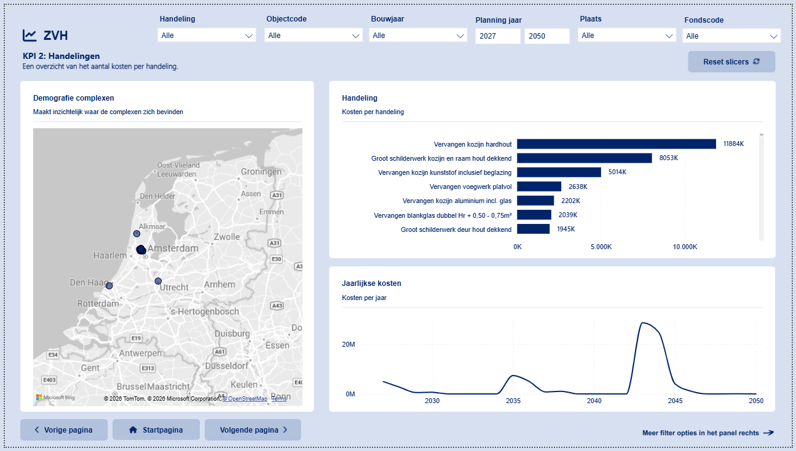
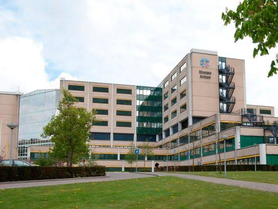
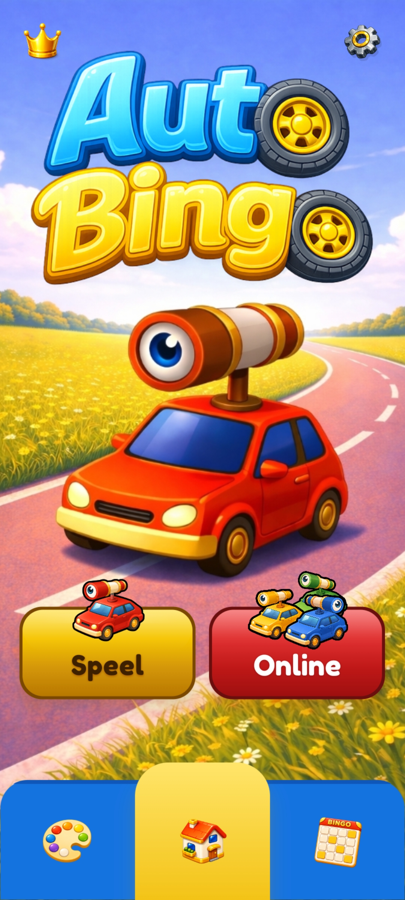
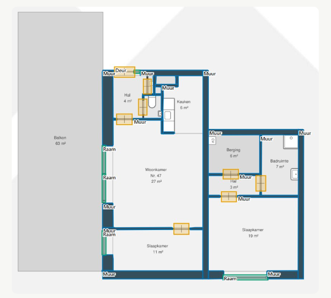
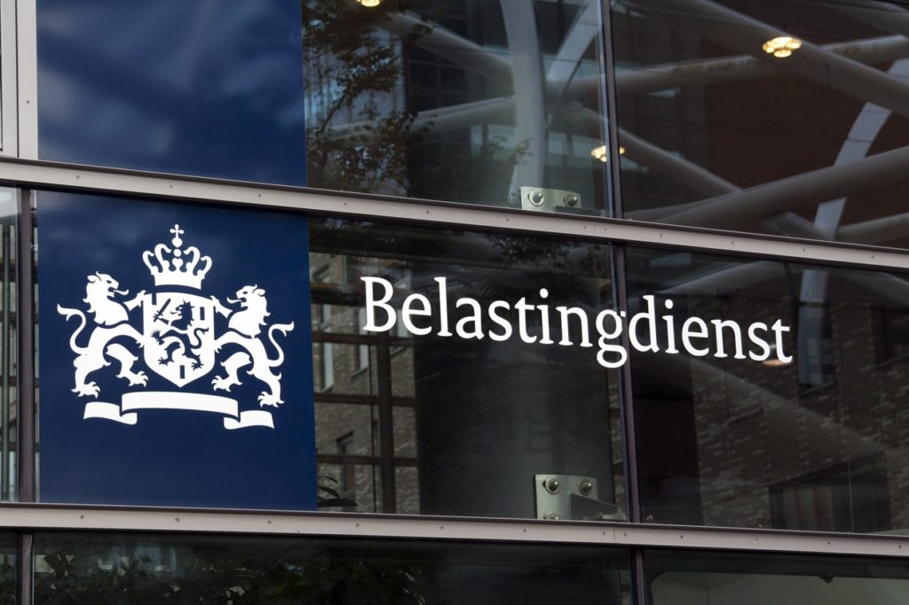
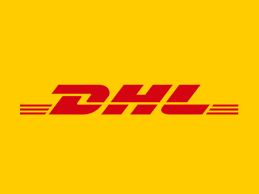
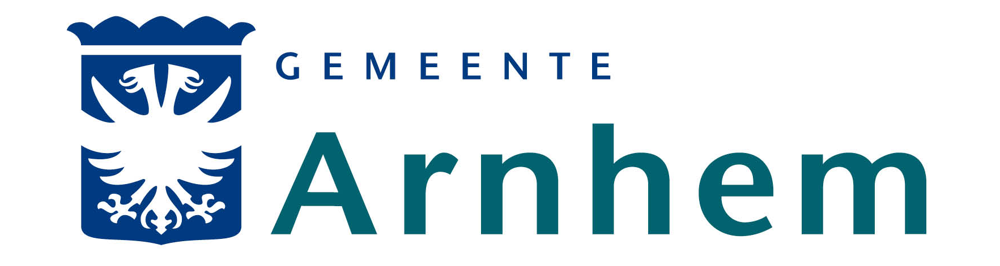

Consultancy & advisering
Een helder advies en implementatieplan dat aansluit op de doelen en dagelijkse praktijk van uw organisatie.
Diensten & referenties
We adviseren en begeleiden organisaties bij digitale verandering, procesverbetering en de praktische inzet van technologie.







Diensten
Een helder advies en implementatieplan dat aansluit op de doelen en dagelijkse praktijk van uw organisatie.
Projecten op het gebied van machine learning en agentic AI. Samen bespreken we wat past bij uw organisatie.
Efficiëntere workflows en betere samenwerking, met oog voor wat medewerkers nodig hebben.
Van handmatige processen naar digitale oplossingen die informatie toegankelijker en werk overzichtelijker maken.
Toegankelijke oplossingen voor bedrijfsprocessen, passend bij de bestaande werkwijze en systemen.
Praktische ondersteuning waarmee teams nieuwe werkwijzen kunnen gebruiken en verder ontwikkelen.
Referenties
Een selectie van projecten waarin we organisaties verder hielpen.
Project voor de Belastingdienst in Apeldoorn.

Wet open overheid voor de Gemeente Arnhem.
Minder gemiste afspraken van patiënten bij Rijnstate.
Onderhoudskosten per gebouw inzichtelijk.

Nieuwe website voor een kwekerij.
Nieuwe app gemaakt voor de appstore.
Voor orders en personeel van DHL.
Machine learning model dat objecten op bouwtekeningen herkent.
Verder praten?